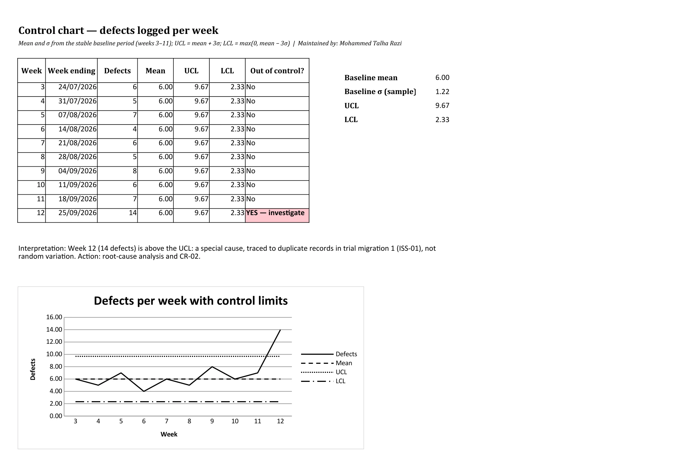
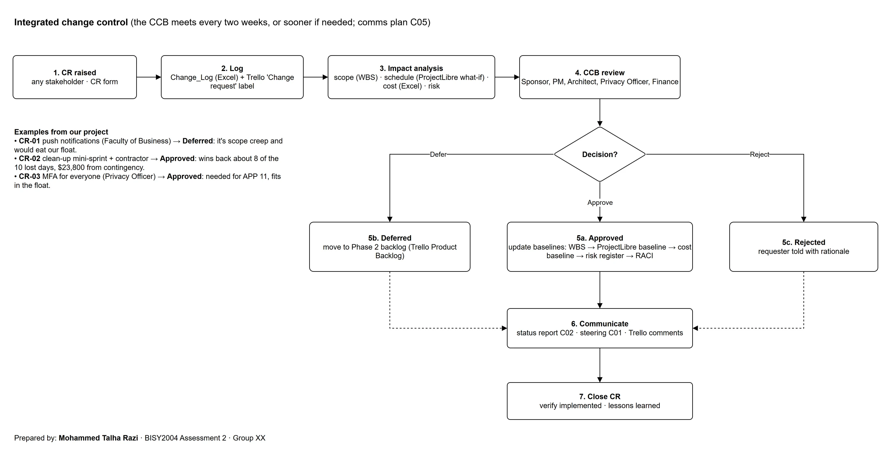
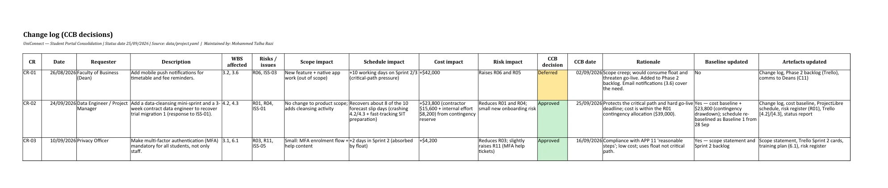
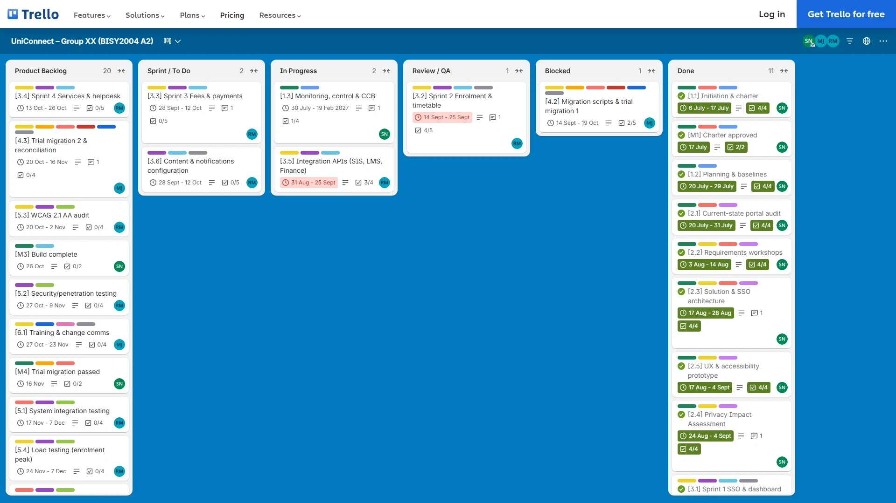
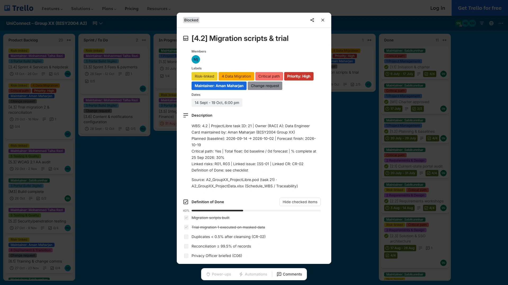
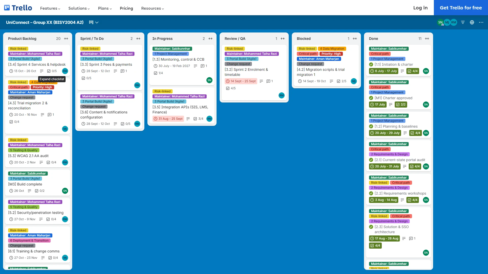
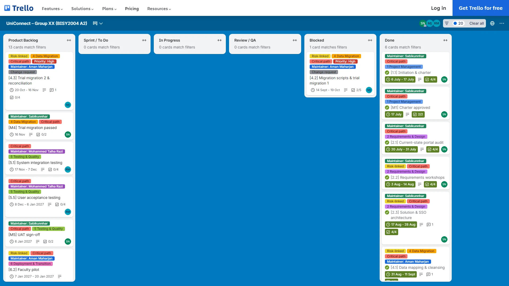

Quality, change and delivery
How we check quality, how a change request gets approved, and how we keep track of the sprint work in Trello.
Quality metrics
| ID | Metric | Target | Method | Current | Status |
|---|---|---|---|---|---|
| Q01 | Migration record accuracy | ≥ 99.5% reconciled | Automated reconciliation report vs source counts | 95.3% (trial 1) | Red |
| Q02 | Portal availability | ≥ 99.5% | Uptime monitoring | 99.2% (test env.) | Amber |
| Q03 | Page load p95 at 5,000 concurrent users | < 2 s | Load test tool (5.4) | Not yet tested | Grey |
| Q04 | WCAG 2.1 AA critical failures | 0 | Automated scan each sprint + audit | 2 (Sprint 1 scan) | Amber |
| Q05 | UAT pass rate | ≥ 95% | UAT scripts passed / executed | Not started | Grey |
| Q06 | Open Severity-1 defects at go-live | 0 | Defect tracker | 1 open (ISS-02) | Amber |
| Q07 | Portal-related helpdesk tickets | −30% within 3 months | Service Desk reports vs 4,200/month baseline | Baseline 4,200/month | Grey |


Weeks 3–11 were stable (mean 6, UCL 9.7). Week 12 had 14 defects, which is above the UCL. We traced that spike to the duplicate records in trial migration 1, so it counts as a special cause and it kicked off a root-cause check and CR-02.
Change control
| CR | Change | Schedule impact | Cost impact | CCB decision | Rationale | Baseline updated |
|---|---|---|---|---|---|---|
| CR-01 | Add mobile push notifications for timetable and fee reminders. | +10 working days on Sprint 2/3 (critical-path pressure) | +$42,000 | Deferred | Scope creep; would consume float and threaten go-live. Added to Phase 2 backlog. Email notifications (3.6) cover the need. | No |
| CR-02 | Add a data-cleansing mini-sprint and a 3-week contract data engineer to recover trial migration 1 (response to ISS-01). | Recovers about 8 of the 10 forecast slip days (crashing 4.2/4.3 + fast-tracking SIT preparation) | +$23,800 (contractor $15,600 + internal effort $8,200) from contingency reserve | Approved | Protects the critical path and hard go-live deadline; cost is within the R01 contingency allocation ($39,000). | Yes: cost baseline +$23,800 (contingency drawdown); schedule re-baselined as Baseline 1 from 28 Sep |
| CR-03 | Make multi-factor authentication (MFA) mandatory for all students, not only staff. | +2 days in Sprint 2 (absorbed by float) | +$4,200 | Approved | Compliance with APP 11 'reasonable steps'; low cost; uses float not critical path. | Yes: scope statement and Sprint 2 backlog |




Delivery in Trello








Every card is named with its WBS code and has the ProjectLibre task ID, owner, dates, float and linked risks, so the board, the schedule and the workbook all describe the same work. Cards sit in the list that matches their % complete at the status date: 11 are done and 4.2 is blocked by ISS-01. WIP limits (In Progress ≤ 5, Review ≤ 3) and a Definition of Done checklist keep the work flowing.
Links to other pages
- Scope: one card for each work package
- Schedule: due dates are the ProjectLibre finish dates
- Risk: the Risk-linked label
- Monitoring: the Blocked list feeds the issue log
What we decided
Approve CR-02 and use the week-12 defect spike as the quality gate for trial 2: reconciliation has to hit 99.5% before SIT starts.